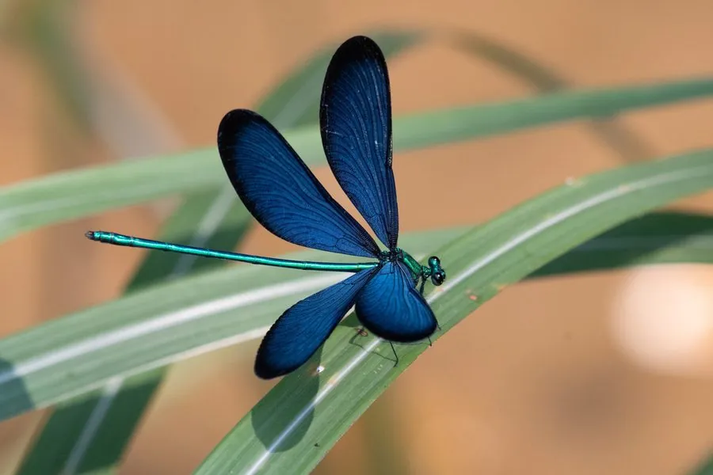

昆虫 · 动物界
白痣珈蟌 Matrona cyanoptera

翅面深蓝黑、翅端具白痣的色蟌，为台湾特有种，栖息于低海拔清澈溪流，稚虫水生，成虫捕食小虫。
- 分类
- 门节肢动物门纲昆虫纲目蜻蜓目科色蟌科属单脉色蟌属
- 栖息环境
- 台湾低海拔至中海拔山区的清澈溪流、山沟和水圳旁
- 地理分布
- 台湾本岛低海拔至中海拔山区，为台湾特有种
- 保护级别
- 尚无专门保护级别；分布局限，栖息地污染与水泥化威胁大
物种志
白痣珈蟌的体长约五厘米，翅展约七至八厘米，翅面深蓝黑色，带蓝紫色的金属光泽，翅端各有一块明显的白色斑块，白痣珈蟌之名由此而来。它的身体细长，胸部墨绿带金属反光，腹部蓝黑至黑色，末端有肛附器，复眼分离，两眼间距较宽。雌虫体型略大，翅端的白斑也更明显。
它是台湾特有种，分布于台湾本岛低海拔至中海拔的山区，栖息在清澈、流速较缓的溪流、山沟和水圳旁，成虫常停歇在溪边的石块、枝条或叶片上，飞行缓慢而低，捕食蚊、蝇、小蜂等昆虫。它属于半变态昆虫，卵产在水边植物组织或湿土中，稚虫水生，靠直肠鳃呼吸，捕食水生昆虫和甲壳类，羽化时爬出水面在石上蜕壳。它一年发生一代，成虫多见于春夏。由于分布局限，栖息地一旦被污染或水泥化整治，种群便迅速消失，目前尚无专门保护级别。
形态与习性
- 体长约五厘米，翅展约七至八厘米
- 翅深蓝黑色带蓝紫金属光泽
- 识别翅端各有一块明显白斑
- 分布台湾特有种，见于本岛低至中海拔溪流
- 变态半变态，稚虫水生，用直肠鳃呼吸
- 发生世代一年一代，成虫多见于春夏
趣味知识
- 它是台湾特有种，离开这座岛的清澈溪流就找不到它。
- 翅尖的白斑在深色翅面上像点了一滴白漆。
- 溪流一旦被水泥砌成水渠，它的稚虫就无处安身。